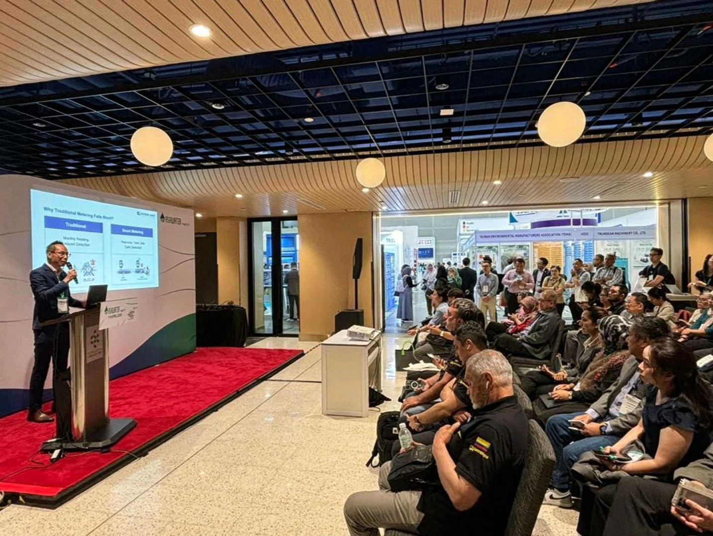
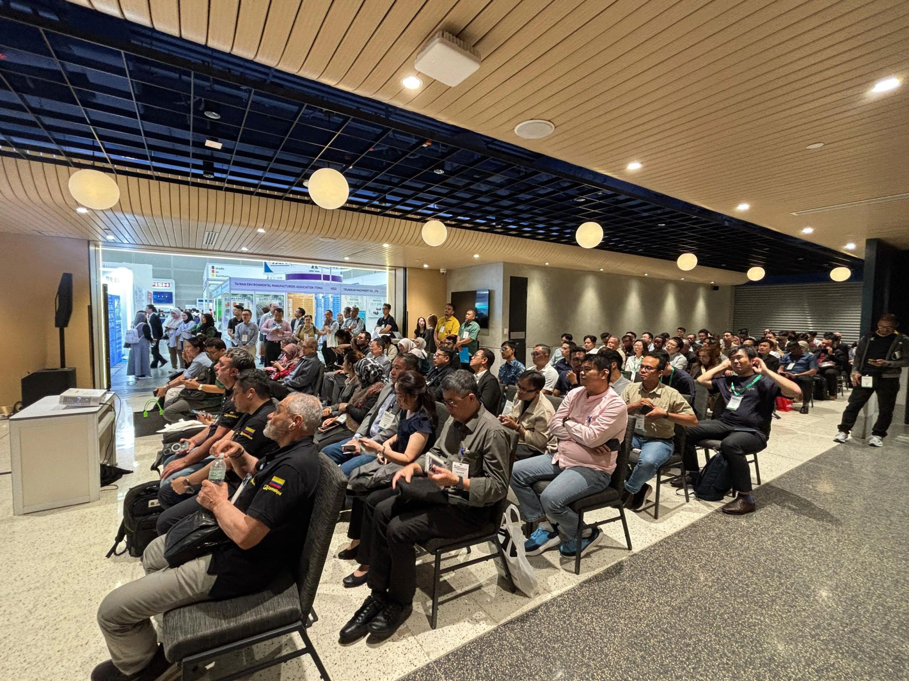
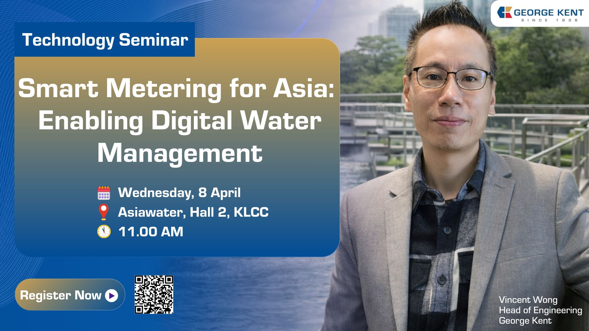
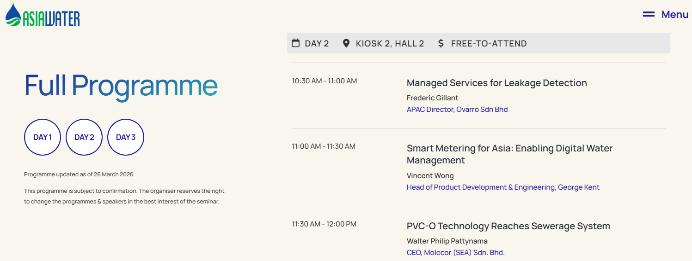

Industry presentations, technical talks, and speaking engagements related to Smart Metering, AMI, Smart Water, Utility IoT, and digital transformation.


Technical presentation session and industry audience at the AsiaWater 2026 Technology Seminar.

Speaker Card for "Smart Metering for Asia: Enabling Digital Water Management" at AsiaWater 2026.

AsiaWater 2026 official programme listing.
Role: Speaker
Event Reference: AsiaWater 2026 Technology Seminars
Date: Day 2, AsiaWater 2026
Venue: Kiosk 2, Hall 2, Kuala Lumpur Convention Centre
Session: Smart Metering for Asia: Enabling Digital Water Management
Vincent Wong is a technology and engineering professional specializing in Smart Metering, Advanced Metering Infrastructure (AMI), Smart Water, Utility IoT, and utility digital transformation. He has contributed to smart metering deployments, product development, technical publications, and industry knowledge sharing across the utility sector.